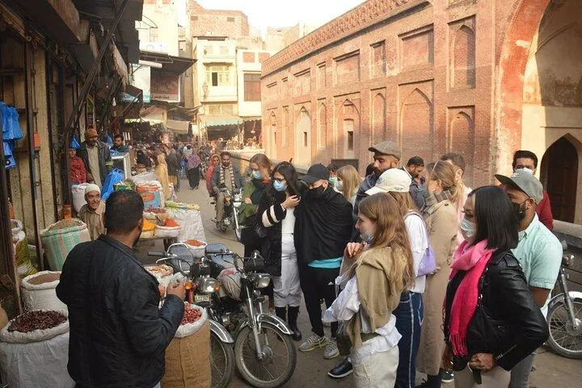

Food is an important part of experiencing Lahore. From early-morning breakfasts to sizzling barbecue, slow-cooked dishes and sweets, the city offers a wide range of flavours. Menus and opening hours vary by establishment, so treat these suggestions as a starting point and check current details before visiting.
Start with a traditional breakfast
Halwa puri, channay and parathas are familiar breakfast choices in Lahore. Breakfast spots can be busiest in the morning, so arrive early if you prefer a quieter visit. Ask about spice levels and ingredients if you have dietary restrictions.
Try Lahore’s hearty classics
Nihari, paye and other slow-cooked dishes are popular options at many traditional restaurants. Recipes and serving styles differ, and some dishes may be rich or spicy. Share several dishes with your group if you want to sample more than one.
Barbecue and grilled food
Seek out local kebabs, tikka and grilled meats for an evening meal. If you have dietary requirements, ask how food is prepared and whether separate cooking arrangements are available. Choose busy, well-maintained places and use your judgement about food hygiene.
Vegetarian options and sides
Daal, seasonal vegetables, chana, rice, roti and a variety of chutneys can make a satisfying meal. Explain any restrictions clearly, especially if you avoid particular ingredients or need food prepared without cross-contact.
Save room for sweets
Traditional sweets, kulfi and falooda are common ways to finish a meal. Look for clean handling and appropriate refrigeration for dairy-based items, especially during hot weather.
Explore food alongside heritage
A guided walk through Lahore’s historic quarters can pair architecture and local history with stops for snacks or a meal. Market conditions and crowd levels vary; keep valuables secure, dress comfortably and follow your guide’s advice on busy lanes.
Practical food-travel tips
Carry drinking water, confirm prices before ordering where menus are unclear, and let restaurant staff know about allergies. If you are not used to spicy food, ask for a milder preparation. Opening hours may differ during Ramadan and public holidays.
A simple one-day food itinerary
Start with a traditional breakfast, spend late morning exploring a heritage area, pause for a light snack, then enjoy a grilled dinner and finish with a dessert. Avoid trying to fit too many stops into a single walking route; Lahore traffic and crowded streets can take time.
Plan your Pakistan trip
Tell Past Enlighten your dates, group size, preferred pace and interests. Confirm current route access, inclusions and prices before finalising your plan.
Ask Past EnlightenTravel conditions, opening arrangements and prices can change. Verify current local information before departure.